Educar hoje para transformar o amanhã.
Os Naturais são nossos amiguinhos da natureza 🌱 Cada um representa valores importantes para ajudar o planeta e as pessoas a tomarem decisões mais sustentáveis.
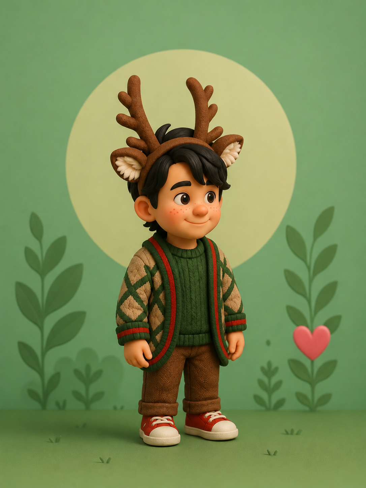
💫 Santim, também conhecido como Satim, é um menino falastrão, doidim e cheio de energia! Muito alegre, ele chega espalhando sua energia bela e positiva, alegrando todos ao seu redor. Com seu jeitinho engraçadinho e espontâneo, conquista fácil quem o conhece. Apesar de ser divertido e brincalhão, Santim é muito amoroso e tem um coração enorme. Ele não gosta de injustiça e, quando vê algo errado, não pensa duas vezes: fica bravo, toma atitude e defende o que é certo, sempre buscando ajudar o próximo. Santim representa a coragem, a empatia e a alegria de fazer o bem, mostrando que cuidar da natureza e das pessoas também pode ser feito com sorriso, energia e união 🌱💚
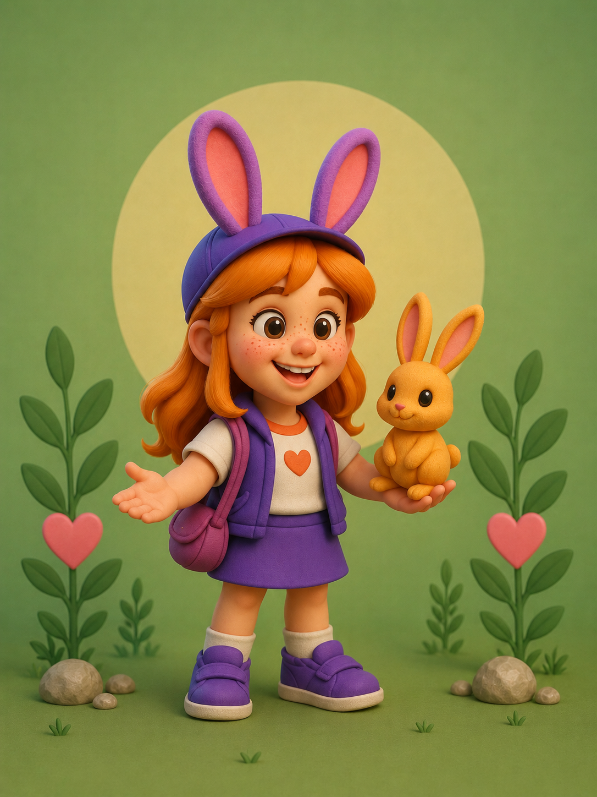
🪴 Bekka é uma menina doce, carinhosa e cheia de amor, que tem um dom especial: tocar corações com sua presença. Amante dos animais e de tudo que é fofo, ela enxerga beleza nos pequenos gestos e nas formas mais simples da vida. Verdadeira e sempre amiga de todos, Bekka carrega o verdadeiro significado do carinho e do amor, espalhando afeto por onde passa. Ela cuida, protege e respeita cada ser vivo, tratando todos com gentileza e atenção. Os animais a amam naturalmente, pois sentem sua energia pura e acolhedora. Sempre alegre e vibrante, Bekka está sempre disponível para ajudar, ouvir e abraçar — seja uma pessoa, um amigo ou um bichinho que precise de cuidado. Ela nos ensina que amar é um ato de proteção, e que a ternura também é uma grande força para cuidar do mundo.🐿️🪴
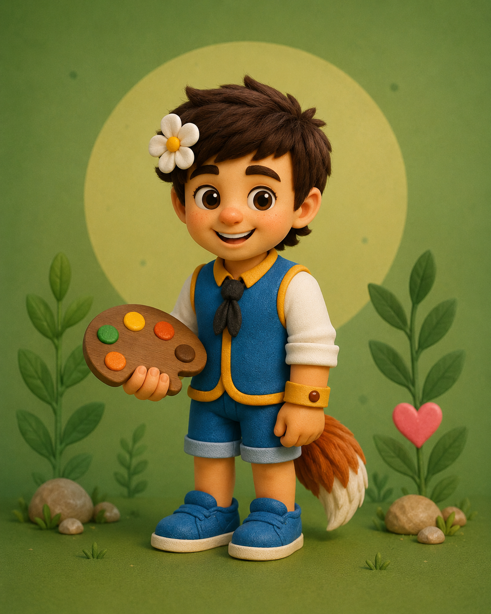
🖍️Du-Arte é um menino feliz, esforçado e inteligente, que enxerga o mundo como uma grande obra de arte. Seu sorriso nasce da criatividade e seu coração pulsa no ritmo da vida. Ele ama a arte em todas as suas formas — a pintura, as cores, as histórias antigas e os saberes que atravessam gerações. É defensor de tudo que é natural, verdadeiro e antigo, pois acredita que o passado guarda lições preciosas para o futuro. Mesmo jovem, Du-Arte carrega uma sabedoria rara, aprendida ao observar a natureza, respeitar o tempo das coisas e valorizar cada detalhe do mundo ao seu redor. Com seu espírito criativo, ele transforma cuidado em beleza e conhecimento em inspiração, mostrando que arte também é uma forma de proteger a vida.🐛🧩
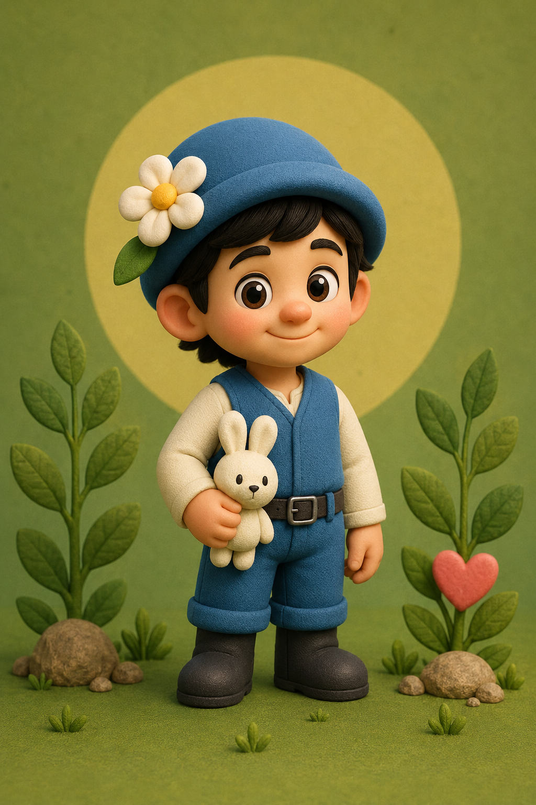
Este rapaizinho é o Guardião da Natureza, um ser puro e sensível, que enxerga beleza em tudo que floresce. Seu coração vibra com as cores das plantas, o cheiro da terra molhada e o brilho das pequenas criaturas que habitam o mundo. Ele ama tudo que é belo, tudo que cresce e tudo que exala amor verdadeiro. Onde ele passa, deixa uma energia calma, cheia de paz e cuidado. Sempre carrega seu coelhinho branco — seu companheiro inseparável — símbolo da ternura e do respeito por todas as formas de vida.🦚🍄
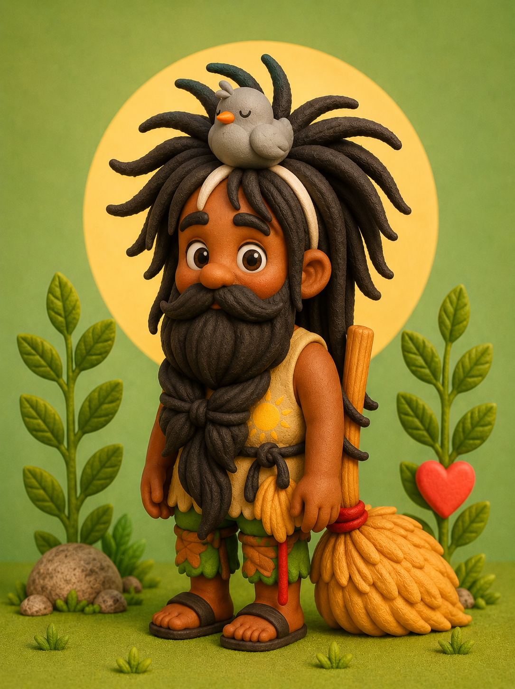
🪴 À primeira vista, Limpinho pode até ser confundido com alguém simples demais, quase invisível aos olhos apressados do mundo. Mas quem se permite conhecê-lo descobre um rapazinho de coração imenso, cheio de ternura, bondade e humanidade. ✨ Amigo de todos, Limpinho é aquele que sempre tenta deixar tudo bem feito. E quando não consegue alcançar a perfeição, entrega o melhor de si, trabalhando até o seu limite, sempre com muito amor envolvido. Para ele, o valor não está no reconhecimento, mas na intenção e no cuidado colocados em cada gesto. Sempre disponível para ajudar, ele não mede esforços quando alguém precisa. Com sua vassourinha alegre, Limpinho não limpa apenas espaços — ele organiza caminhos, afasta o peso do dia e espalha leveza por onde passa. Seu maior talento é fazer do simples algo especial, mostrando que a verdadeira riqueza está na bondade, na dedicação e no amor ao próximo.🧹🤝
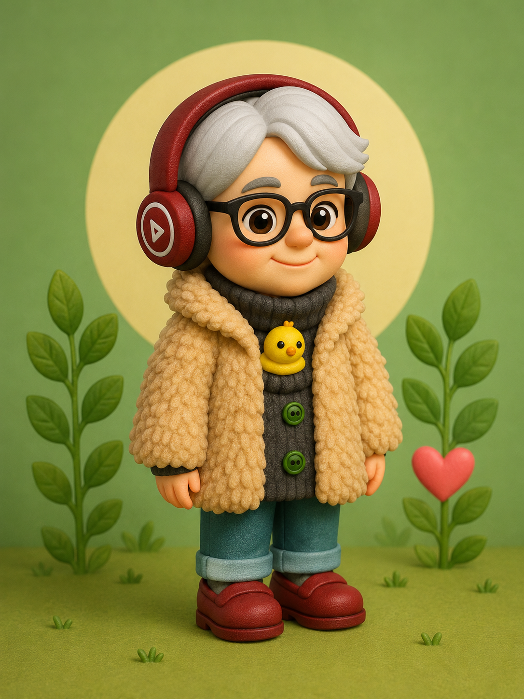
💧Sel-Mar, também conhecida como Céu e Mar, é o coração da sabedoria que nasce da experiência. Acolhedora por natureza, ela ama o próximo de forma genuína, mesmo quando esse amor não é retribuído ou quando lhe causam dor. Seu coração é amplo, paciente e cheio de compreensão. Sempre esforçada e dedicada, Sel-Mar encontra na costura sua forma mais pura de expressão. Com as próprias mãos, cria trabalhos belíssimos, carregados de cuidado, carinho e significado. Cada ponto costurado é um gesto de amor e entrega. Artista por essência, ela ama fazer lives, compartilhar sua arte e espalhar alegria. Suas risadas são leves e contagiantes, capazes de aquecer quem está por perto, assim como suas criações manuais, que transmitem conforto e afeto. Sel-Mar é, ao mesmo tempo, céu e mar: O céu, cheio de luzes, energia boa e esperança;o mar, que acolhe, abraça e envolve com ternura, trazendo paz ao coração de quem se aproxima. 🪡🧵
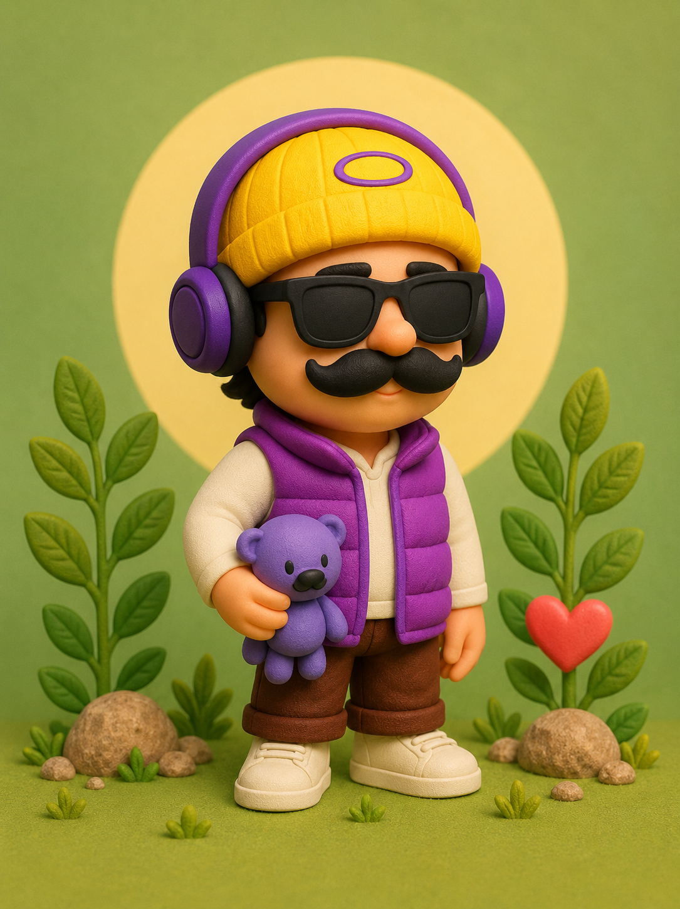
💜Gorrinho é um verdadeiro pacificador, aquele que sempre busca o diálogo e tenta resolver tudo na base da conversa. Comunicativo e muito bom com as palavras, ele tem o dom de negociar, aproximar pessoas e acalmar situações difíceis. Às vezes pode até ficar um pouquinho nervoso, mas isso nunca apaga o que ele tem de maior: um coração gigante. Sempre reconhecido por seu gorrinho amarelo e suas roupas roxas, Gorrinho carrega consigo um ursinho roxo muito especial, presente que ganhou de sua mamãe e que simboliza carinho, proteção e amor. Esse detalhe o representa como a verdadeira “carinha da paz”. Ele ama fazer lives, conversar, compartilhar novidades e estar em contato com as pessoas. Sonhador, deseja um dia ser repórter ou se tornar famoso, não por vaidade, mas para dar voz, espalhar boas mensagens e ajudar ainda mais gente. Mesmo com seus sonhos grandes, Gorrinho nunca deixa de ser humilde. Ele sempre estende a mão ao próximo, valoriza todos ao seu redor e jamais diminui ninguém, acreditando que o respeito e a empatia são as maiores formas de grandeza.🎧📷
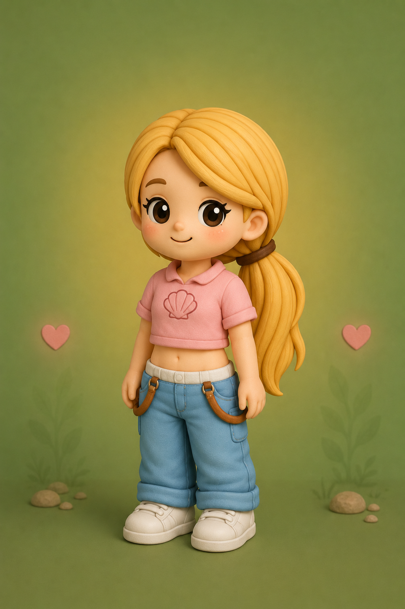
🐬Conchinha é conhecida por seu jeitinho bravo e barraqueiro, sempre pronta para falar o que pensa e defender quem ama. À primeira vista, muita gente acredita que ela tem um coração duro, mas por dentro existe uma menina extremamente amorosa e intensa. Mesmo carregando cicatrizes e desafios de sua caminhada, Conchinha aprendeu a ser grata por cada etapa de sua vida. Tudo o que viveu ajudou a construir sua força, sua coragem e a maneira única que encontrou de enxergar o mundo. Ela não costuma demonstrar sentimentos facilmente, mas quem conquista sua confiança descobre alguém leal, protetora e capaz de fazer de tudo pelas pessoas importantes em sua vida. Conchinha acredita que até os momentos difíceis têm propósito, e por isso segue firme, aprendendo, amadurecendo e valorizando cada pequena vitória conquistada. 🐋🚢
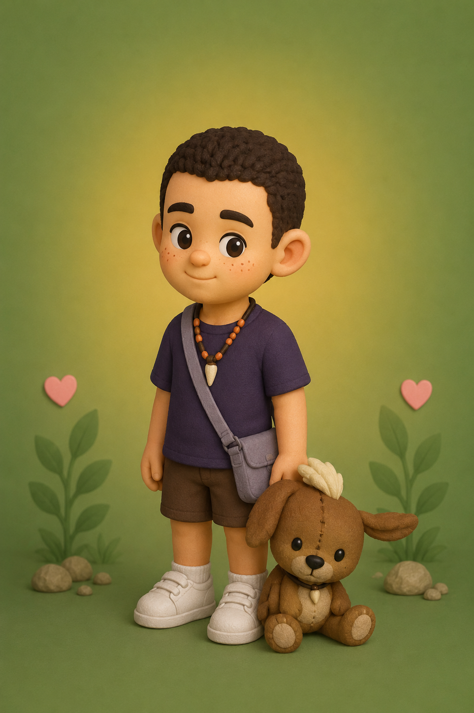
🐻Caquinho é alegre, inteligente e apaixonado por tecnologia. Sempre criando ideias novas, ele usa sua criatividade para ajudar a natureza e proteger os animais. Muito fiel aos amigos, está sempre pronto para ajudar quem precisa e ensinar maneiras divertidas de cuidar do planeta. Com seu jeito curioso e divertido, Caquinho acredita que pequenas atitudes podem transformar o mundo em um lugar melhor. Ele ama aprender coisas novas e mostrar que tecnologia e natureza podem caminhar juntas. Além de ser muito esperto, Caquinho também possui um coração enorme. Ele valoriza a amizade, o companheirismo e nunca deixa ninguém para trás. Quando vê alguém triste ou precisando de ajuda, faz de tudo para arrancar um sorriso e trazer alegria novamente. Seu maior sonho é criar invenções capazes de melhorar a vida das pessoas e dos animais, mostrando que o futuro pode ser mais sustentável, divertido e cheio de esperança para todos. 🐾🌎
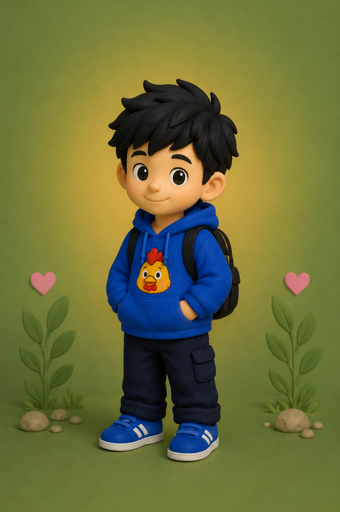
🌙 Sempre atento e pronto para proteger quem ama, Galinho é conhecido por sua coragem, força e determinação. Ele nunca abandona seus amigos e está sempre firme nas decisões importantes. Quando aparece algum problema, é um dos primeiros a ajudar e encontrar soluções. Mesmo com seu jeito sério às vezes, ele possui um coração bondoso e cheio de carinho. Galinho acredita na união, na amizade e na importância de proteger a natureza e todos os seres vivos. Sempre observando tudo ao seu redor, gosta de incentivar as pessoas a cuidarem melhor do planeta e respeitarem os animais. Para ele, cada vida merece atenção, proteção e amor. Sua coragem inspira todos ao seu redor, mostrando que ser forte não significa apenas lutar, mas também saber acolher, proteger e permanecer ao lado de quem precisa nos momentos mais difíceis. 🐥🦜
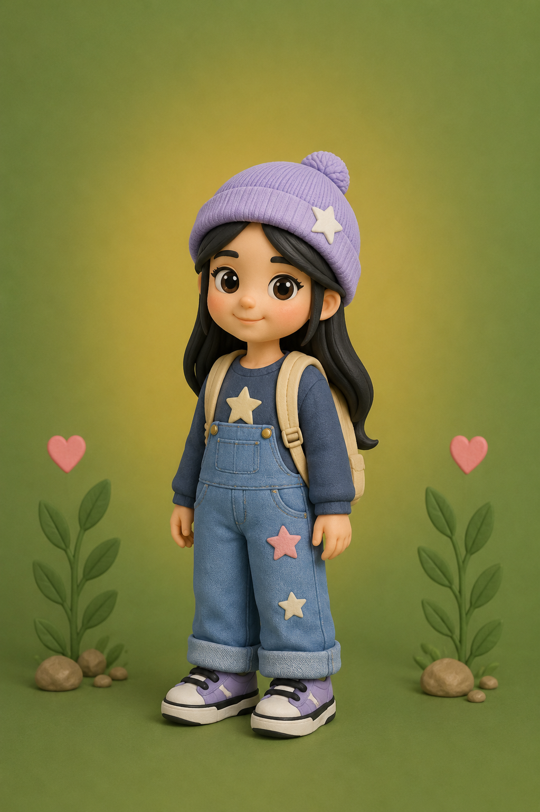
🪄 Sonhadora é uma menina meiga, amorosa e cheia de sentimentos. Com seu jeitinho bobo e divertido, ela consegue arrancar sorrisos das pessoas ao seu redor e espalhar alegria por onde passa. Apaixonada por músicas e artes, Sonhadora encontra na criatividade uma forma de expressar tudo o que sente. Ela ama cantar, imaginar histórias e viver em seu mundo cheio de cores, emoções e sonhos. Seu maior desejo é se tornar famosa e reconhecida, não apenas pelo talento, mas também por tocar o coração das pessoas com sua arte e sua forma doce de enxergar a vida. Mesmo sonhando alto, Sonhadora nunca deixa de valorizar o que possui de mais importante: sua família. Ela ama cada momento ao lado de quem ama e acredita que o verdadeiro brilho da vida está nas pessoas que permanecem ao seu lado. 👑🌸